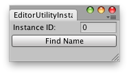

EditorUtility.InstanceIDToObject
public static Object InstanceIDToObject(int instanceID);
Description 描述
Translates an instance ID to a reference to an object.
If the object is not loaded from disk, loads it from disk.

Editor Window to enter the instance ID and print the name of the object.
using UnityEngine; using UnityEditor;
public class InstanceIDToObjectExample : EditorWindow { static int id;
[MenuItem("Example/ID To Name")] static void Init() { // Get existing open window or if none, make a new one: InstanceIDToObjectExample window = (InstanceIDToObjectExample)EditorWindow.GetWindow(typeof(InstanceIDToObjectExample)); window.Show(); }
void OnGUI() { id = EditorGUILayout.IntField("Instance ID:", id); if (GUILayout.Button("Find Name")) { Object obj = EditorUtility.InstanceIDToObject(id); if (!obj) Debug.LogError("No object could be found with instance id: " + id); else Debug.Log("Object's name: " + obj.name); } }
void OnInspectorUpdate() { Repaint(); } }